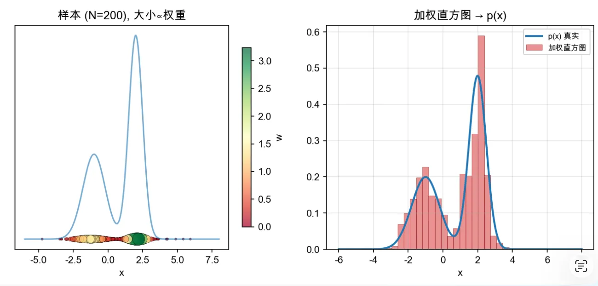

封面故事 / Cover Story
重要性采样在强化学习中的应用
从一个不能直接采样的分布出发，用另一个分布的数据和一组权重，去逼近真正想要的期望。这是数学技巧，也是 PPO 能够复用旧数据的全部理由。
No. 07 · Autumn 2026 Junction Lab
Systems · Algorithms · Craft

封面故事 / Cover Story
从一个不能直接采样的分布出发，用另一个分布的数据和一组权重，去逼近真正想要的期望。这是数学技巧，也是 PPO 能够复用旧数据的全部理由。
Notes & Marginalia
算法与数据 2026.06.11 X-080